一條線，統一所有材質的關係。
One line unifies everything.
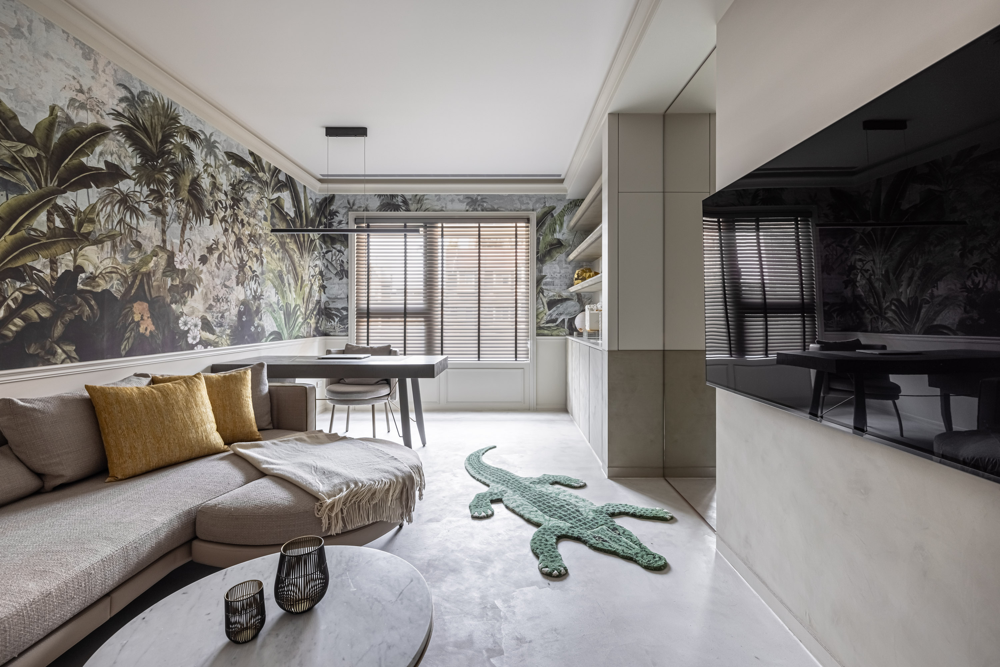
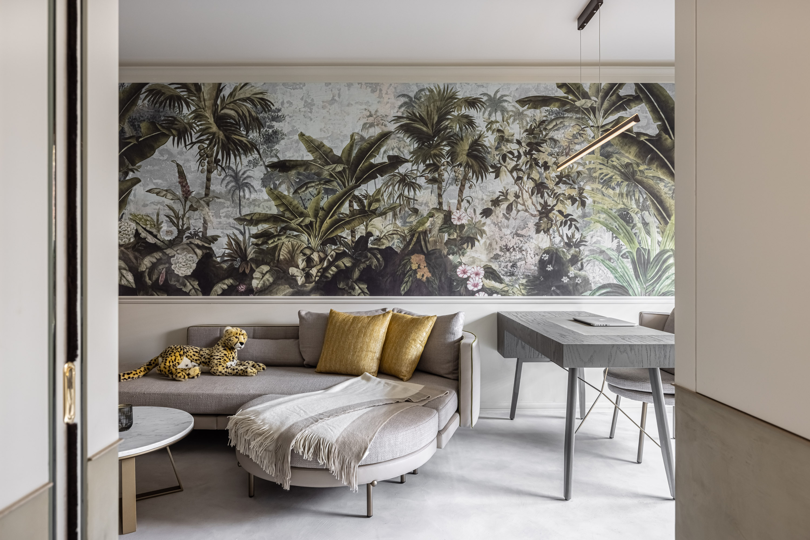

01
這個案子用一條線統一所有材質的關係。從走道到臥室到浴室，半高切線把每一個材質交界壓在同一基準上——節奏不因轉折而斷。不用單一主材塑造風格，用光澤、觸感與施作方式的對比，讓材料之間自然找到秩序。
One line unifies every material relationship. From corridor to bedroom to bathroom, a half-height datum holds every boundary at the same level — rhythm doesn't break at transitions. No single dominant material sets the style; contrasts in sheen, texture, and application let materials find their own order.
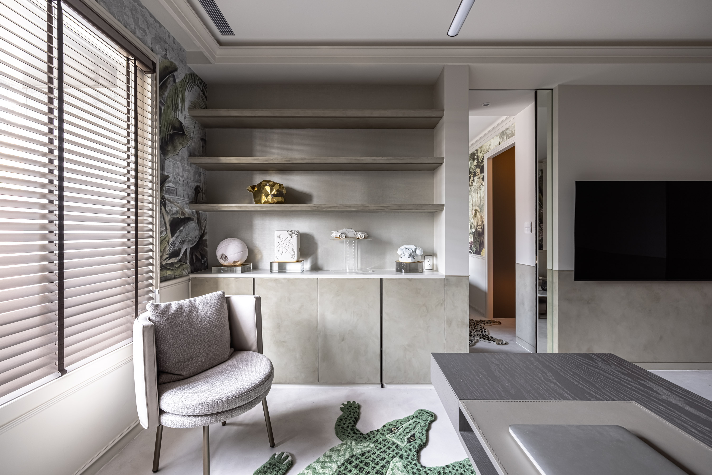
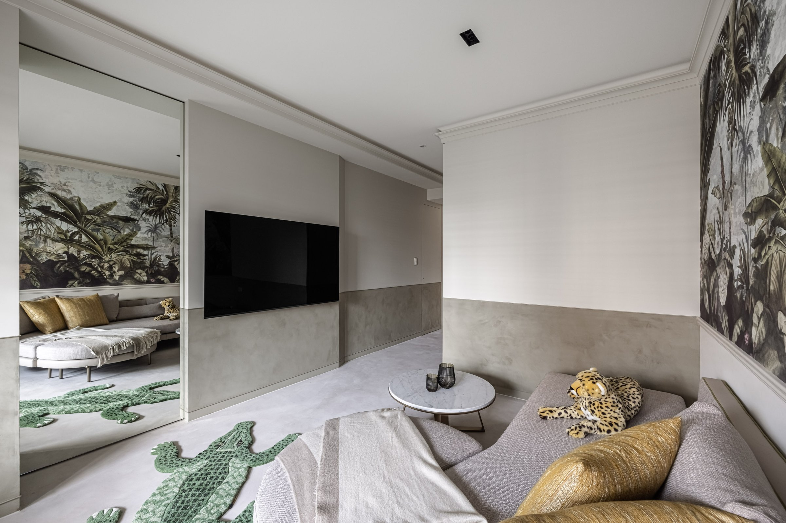
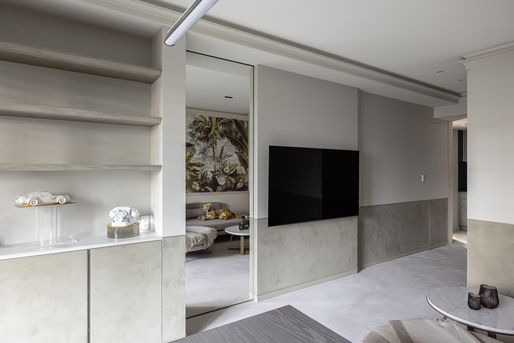
02
壁紙的熱帶森林圖像密度高，本身有敘事。礦物塗料在下半段接住它——牆面因此有了上下的呼吸。喧囂和安靜同時在場，也同時被整理好。
The wallpaper's tropical-forest imagery is dense, carrying its own narrative. Mineral paint in the lower half catches it — the wall breathes vertically. Exuberance and quiet coexist, both organized.
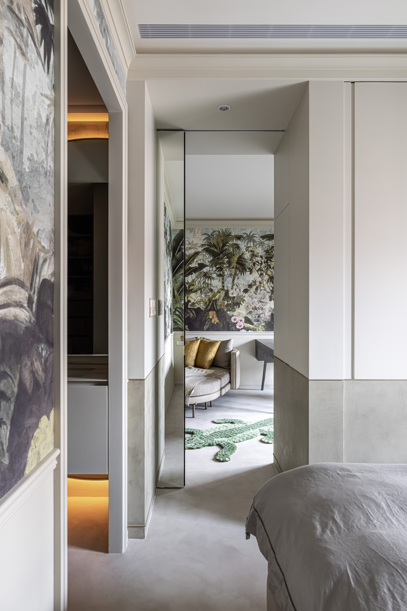
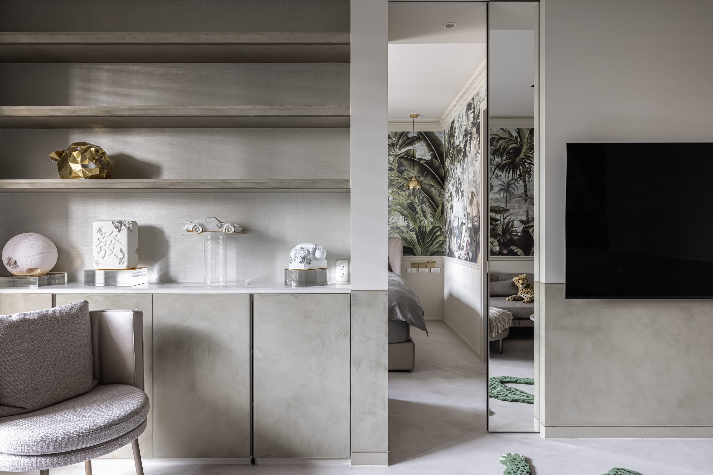

03
浴室用深綠手工磚包牆，釉面不規則，光在上面形成波動。礦物塗料在下半段延續亮度，浴缸因此成為焦點。低彩度的底，細節卻很豐富。
The bathroom is wrapped in deep-green handmade tile — uneven glaze, light rippling across it. Mineral paint below continues the luminosity; the bathtub becomes the focal point. Low chroma at the base, yet rich in detail.
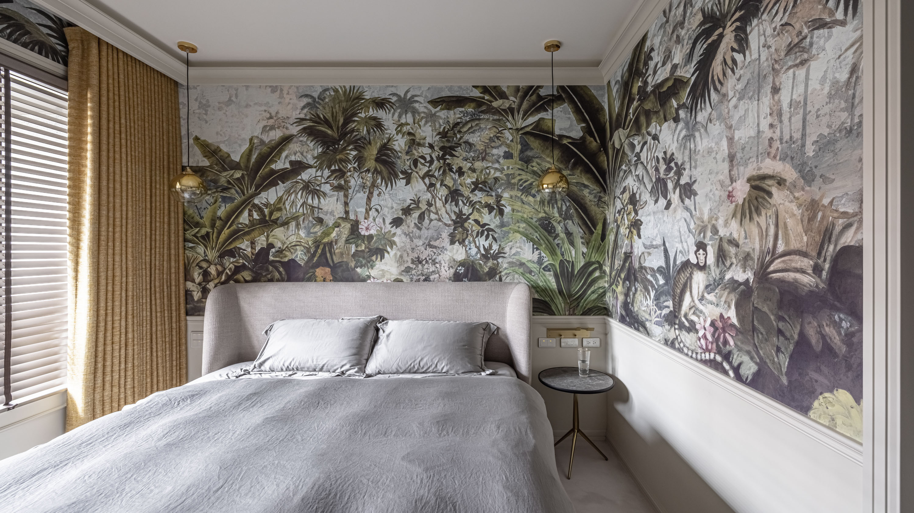
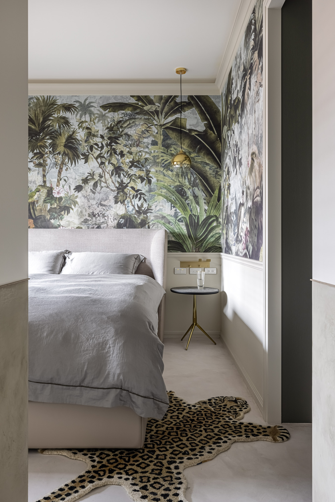

04
水平界線是這個案子最安靜的決定，也是控制力最強的。它不製造焦點，它讓所有材質在同一個基準上共存。每一道轉折都回到同一條線，節奏就不被打斷。
The horizontal datum is the quietest decision and the most controlling. It creates no focal point — it lets every material coexist on the same baseline. Each transition returns to the same line; rhythm never breaks.
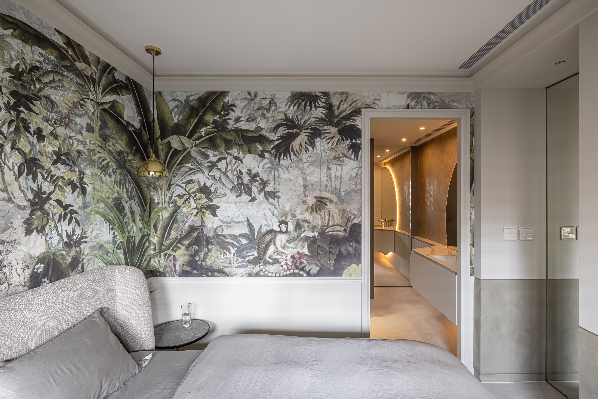
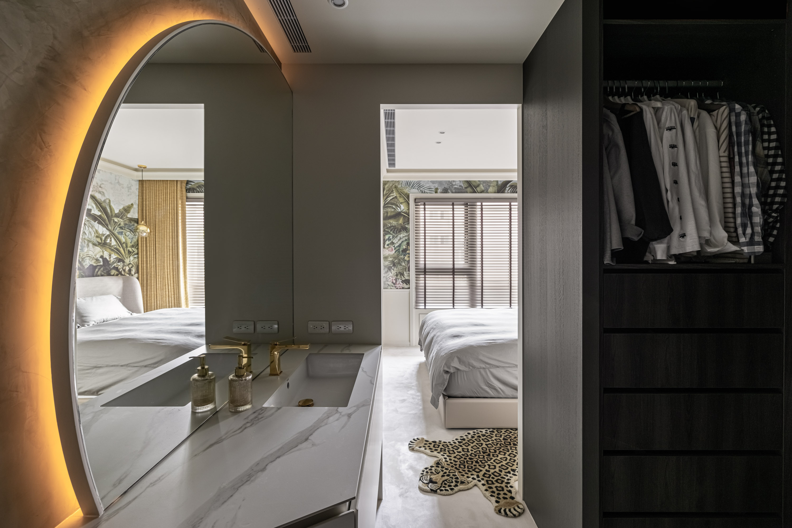
05
這個案子最後的完成度，不在於某一個空間的亮點，而在於整體的連貫性。從走道走到臥室、從臥室走到浴室，你不會感覺到「換了一個房間」——你感覺到的是同一首歌的不同樂章，節奏在變，但旋律從未斷過。
The final measure of this project is not any single room's highlight but the coherence of the whole. Walking from corridor to bedroom to bathroom, you never feel you have entered a different room — you feel different movements of the same song. The rhythm changes, but the melody never breaks.
All Photos